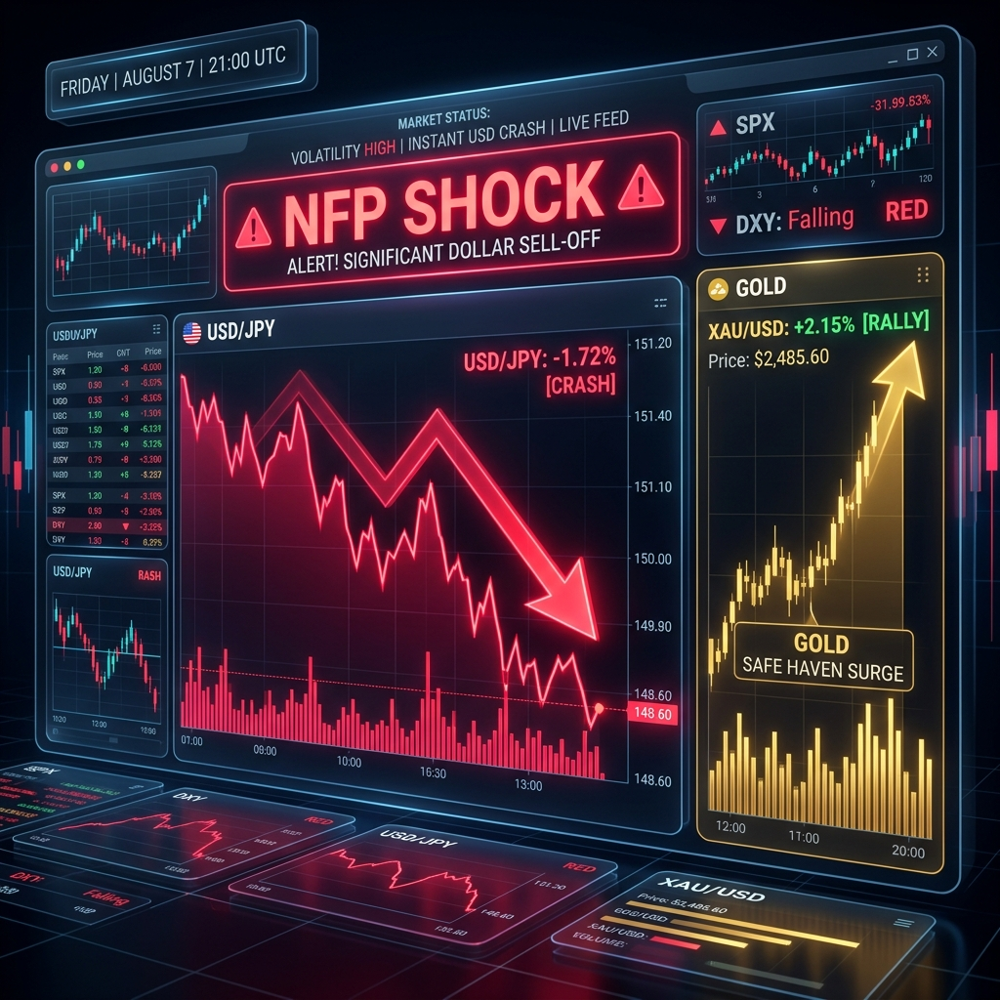

先ほど21:30に発表された米雇用統計（NFP）の結果が、市場に「NFPショック」をもたらしています。非農業部門雇用者数が市場予想（+8.0万人）に反して「2.3万人の減少」へと沈み込んだことで、米国のリセッション（景気後退）懸念が一気に強まりました。
これにより、米金利は急低下し、ドル円は一瞬にして158円台から157円台前半へ急落（ドル売り）しています。一方で、利下げ観測の急激な高まりからハイテク株（ナスダック）には買い戻しが入り、ゴールドも安全資産として底堅く推移する激しい展開となっています。
「米雇用統計ショックによるドル急落」と「利下げ観測の急拡大」。
米雇用統計の発表を境に相場の流れが一変しました。19時台には4.67%まで上昇していた米10年債利回りが大きく削られ、為替相場では強烈なドル売り・円買いが進行しています。株式市場は「景気悪化＝利下げ前倒し」のロジック（バッドニュース・イズ・グッドニュース）から、ナスダック先物が急上昇し、暗号資産（BTC）も65,000ドル台へ乗せるリスクオンの反応を見せています。
| 指数・銘柄 | 現在値 | 前回比（前日比） | 騰落率 | 確認事項 |
|---|---|---|---|---|
| S&P 500 (ES=F) | 7,754.25 | +6.50 | +0.25% | 指標後に買い優勢 |
| Nasdaq (NQ=F) | 29,661.75 | +45.75 | +0.59% | 利下げ期待で反発 |
| Dow (YM=F) | 54,072.0 | +14.0 | +0.11% | 底堅い |
| 日経225現物 | 65,606.71 | -76.55 | -0.12% | 【大引け後】 |
| CME日経225先物 | 65,985.0 | +165.0 | +0.56% | 66,000円回復を試す |
| USD/JPY | 157.102 | -1.174 | -0.85% | 雇用統計ショックで急落 |
| EUR/USD | 1.1569 | +0.0039 | +0.38% | ドル全面安でユーロ高 |
| 金 | 4,373.3 | -3.3 | +1.71% | 高値圏で乱高下 |
| 原油 | 77.29 | +0.34 | +0.00% | 横ばい |
| BTCUSD | 65,055.01 | +225.24 | +1.24% | 65000ドル突破！ |